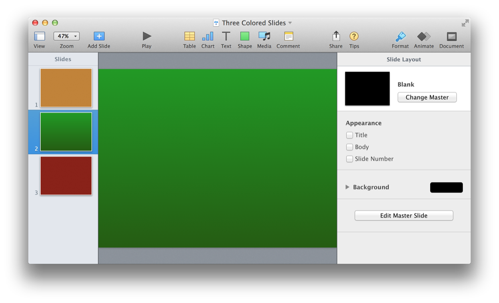
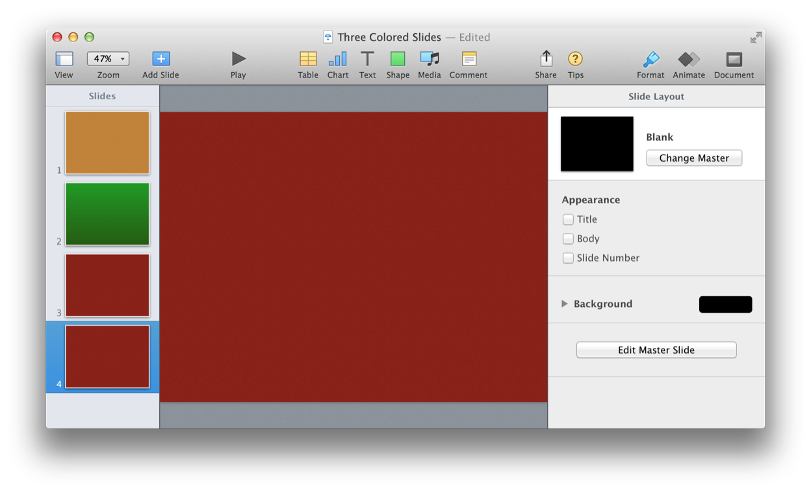
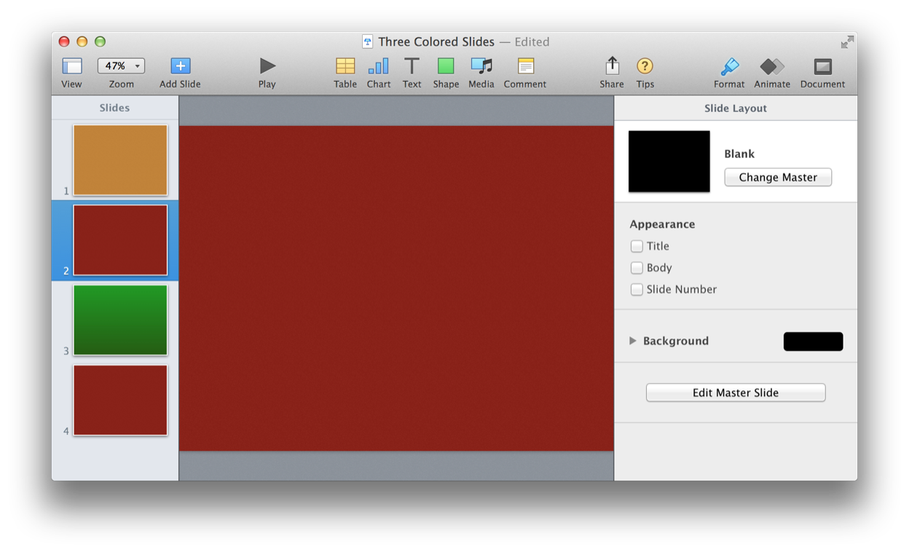
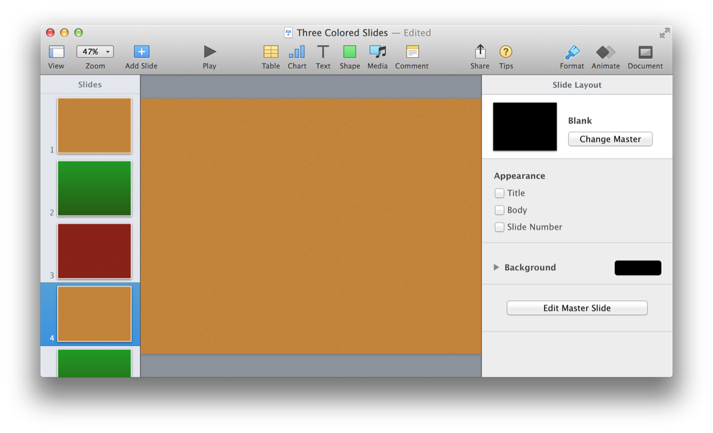
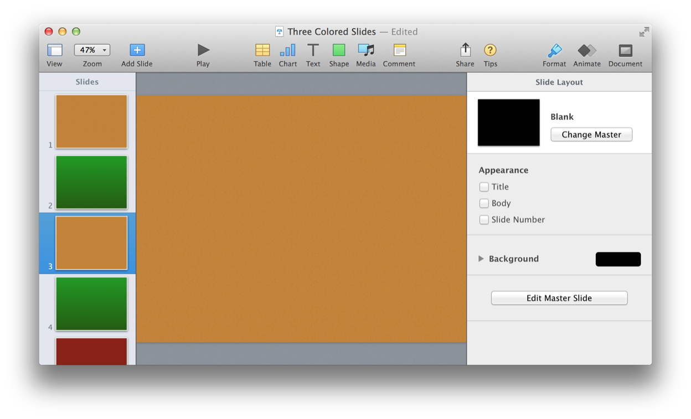

Another useful way to create slides is to duplicate existing slides. The duplicate command from the Keynote Suite of the Keynote dictionary provides the means for doing just that!
duplicate v : Duplicate one or more contiguous slides.
duplicate slide : The slide or range of slides to be duplicated. A range of slides is specified as: slides 1 thru 4
[ to ( location specifier ) ] : The location in the presentation to receive the duplicated slide(s). Default location is the end of the presentation.
The following example scripts are shown addressing this small example presentation (DOWNLOAD):
(⬇ see below ) A small presentation with three slides:

Duplicating a Slide
Here’s how to duplicate a slide to the default slide insertion location:
| Duplicate a Slide | ||
| 01 | tell application "Keynote" | |
| 02 | activate | |
| 03 | tell the front document | |
| 04 | duplicate the last slide | |
| 05 | end tell | |
| 06 | end tell | |
(⬇ see below ) The indicated slide is duplicated to the default location, which is the end of the presentation:

Here’s how to duplicate a slide to a specific location in the presentation:
| Duplicate a Slide to a Specific Location | ||
| 01 | tell application "Keynote" | |
| 02 | activate | |
| 03 | tell the front document | |
| 04 | duplicate the last slide to before second slide | |
| 05 | end tell | |
| 06 | end tell | |
(⬇ see below ) The indicated slide is duplicated to the specified location, which is before the second slide of the presentation:

Duplicating a Range of Slides
Here’s how to duplicate a range of contiguous slides:
| Duplicating a Range of Slides | ||
| 01 | tell application "Keynote" | |
| 02 | activate | |
| 03 | tell the front document | |
| 04 | duplicate (slides 1 thru 2) | |
| 05 | end tell | |
| 06 | end tell | |
(⬇ see below ) Since no location was specified, the indicated range of slides was duplicated at the end of the presentation:

Here’s how to duplicate a range of contiguous slides to a specific location:
| Duplicating a Range of Slides to a Specified Location | ||
| 01 | tell application "Keynote" | |
| 02 | activate | |
| 03 | tell the front document | |
| 04 | duplicate (slides 1 thru 2) to after slide 2 | |
| 05 | end tell | |
| 06 | end tell | |
(⬇ see below ) Since a location was specified, the indicated range of slides was duplicated to the location specified in the presentation:
